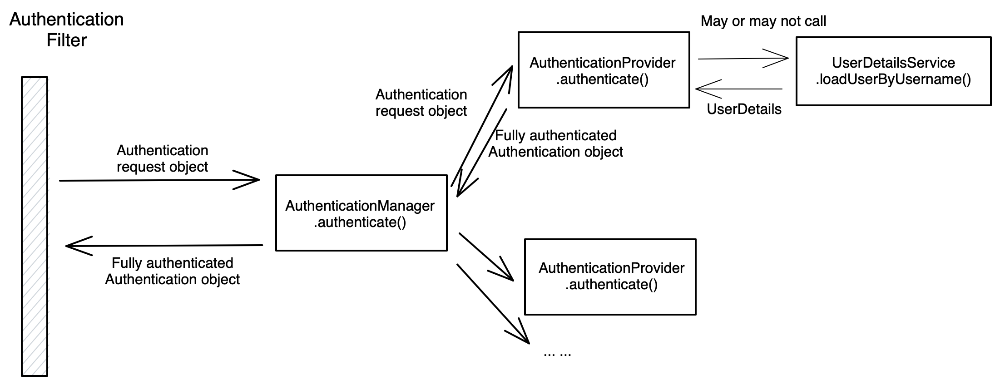

Spring Security - Authentication Process
Authentication Process
Authentication Process - The Big Picture
Authentication Filter
Authentication filter usually extends AbstractAuthenticationProcessingFilter class.
Example Authentication Filters are
- UsernamePasswordAuthenticationFilter
- CasAuthenticationFilter
- OAuth2LoginAuthenticationFilter
- OpenIDAuthenticationFilter
- Saml2WebSsoAuthenticationFilter
Authentication Filter’s basic responsibility
- Authentication Filter creates Authentication from the user Request. For example, UsernamePasswordAuthenticationFilter creates UsernamePasswordAuthenticationToken
- Authentication Filter delegates the work to AuthenticationManager
- If authentication is success, then set the Authetnication on the SecurityContextHolder
AuthenticationManager
- AuthenticationManager is one of the most important class in Spring Security.
- Responsible for processing Authentication request and returns a fully populated Authentication object.
- AuthenticationManager is an interface, the most common implementation is ProviderManager. ProviderManager delegates to a List of AuthenticationProviders.
- You don’t usually work with AuthenticationManager directly, you use AuthenticationManagerBuilder to create it.
- Spring Security Reference on AuthenticationManager
- java doc
- source code
AuthenticationManager Interface source code
1 | public interface AuthenticationManager { |
authenticate method Attempts to authenticate the passed Authentication argument
- returning a fully populated Authentication object (including granted authorities, authenticated=true) if successful.
- if input request is not valid, throw AuthenticationException
- reutrns null if can’t decide
ProviderManager
Iterates an Authentication request through a list of AuthenticationProviders.
AuthenticationProviders are usually tried in order until one provides a non-null response. A non-null response indicates the provider had authority to decide on the authentication request and no further providers are tried.
Like AuthenticationManager, you don’t work directly with ProviderManager.
AuthenticationProvider
- It is the actual class that does the authentication.
- AuthenticationProvider has a supports method that tells AuthenticationManager what Authentication object it supports.
- An app can have multiple AuthenticationProviders(Ldap, Dao, OAuth2 etc)
- java doc
- source code
1 | public interface AuthenticationProvider { |
There are manay providers implements AuthenticationProvider interface. Some of the most important ones are
- DaoAuthenticationProvider - this is the most common AuthenticationProvider you will see
- LdapAuthenticationProvider - An AuthenticationProvider implementation that authenticates against an LDAP server.
- JwtAuthenticationProvider - Jwt-encoded Bearer Tokens for protecting OAuth 2.0 Resource Servers.
UserDetailsService
Core interface which loads user-specific data.
It is used throughout the framework as a user DAO and is the strategy used by the DaoAuthenticationProvider.
The interface requires only one read-only method, which simplifies support for new data-access strategies.
UserDetailsService source code
1 | public interface UserDetailsService { |
Known Implementing Classes:
- CachingUserDetailsService
- InMemoryUserDetailsManager
- JdbcDaoImpl
- JdbcUserDetailsManager
- LdapUserDetailsManager
- LdapUserDetailsService
Authentication Process Walkthrough
We can walkthrough a In-memory authentication process to understand how Spring Security authentication works.
UsernamePasswordAuthenticationFilter
- UsernamePasswordAuthenticationFilter Extends AbstractAuthenticationProcessingFilter abstract class.
- is the filter used for username password authentication.
- Processses authentication submission using request parameter “username” and “password”.
- Source code
AbstractAuthenticationProcessingFilter.doFilter method - This is the entry point for UsernamePasswordAuthenticationFilter
1 | public void doFilter(ServletRequest req, ServletResponse res, FilterChain chain) |
The most important method call is authResult = attemptAuthentication(request, response);. If method call is successful it calls successfulAuthentication method, otherwise call unsuccessfulAuthentication method.
attemptAuthentication method
1 | public Authentication attemptAuthentication(HttpServletRequest request, |
attemptAuthentication method gets request parameter “username” and “password”, trim it and then create a UsernamePasswordAuthenticationToken object. UsernamePasswordAuthenticationToken is an implementation of Authentication. UsernamePasswordAuthenticationFilter delegates the authentication to AuthenticationManager.
successfulAuthentication method
1 | protected void successfulAuthentication(HttpServletRequest request, |
If authentication is successful, UsernamePasswordAuthenticationFilter calls SecurityContextHolder.getContext().setAuthentication(authResult); to set the SecurityContext.
Then call successHandler.onAuthenticationSuccess to let the successHandler handle the redirect
unsuccessfulAuthentication method
1 | protected void unsuccessfulAuthentication(HttpServletRequest request, |
If login attempt is unsuccessful, clear the SecurityContextHolder.
Then call failureHandler.onAuthenticationFailure to let the failureHandler handle the redirect
ProviderManager
- ProviderManager is the most used AuthenticationManager. authenticate method is the most important method of ProviderManager
- source code
authenticate method
1 | public Authentication authenticate(Authentication authentication) |
ProviderManager contains a list of AuthenticationProviders. AuthenticationProviders will tried until an AuthenticationProvider can support indicated Authentication, the AuthenticationProvider will do the authentication. if the process is successful, then remove credentials and other secret data from authentication and return it. If none of the AuthenticationProviders can successfully authenticate the request, an AuthentiationException is thrown.
DaoAuthenticationProvider
- DaoAuthenticationProvider is the most used AuthenticationProvider
- It retrieves userdetails from UserDetailsService. Then compare the password with the saved password.
- DaoAuthenticationProvider extends AbstractUserDetailsAuthenticationProvider.
- Source code
support method - DaoAuthenticationProvider supports Authentication of type UsernamePasswordAuthenticationToken
1 | public boolean supports(Class<?> authentication) { |
authenticate method
1 | public Authentication authenticate(Authentication authentication) |
authenticate method retrieve user by calling retrieveUser method. if user is not found, then throw BadCredentialsException. If authentication checks fail, throw BadCredentialsException too. If check is successful, call createSuccessAuthentication method.
retrieveUser method retrieve user using its UserDetailsService.
1 | protected final UserDetails retrieveUser(String username, |
additionalAuthenticationChecks method
1 | protected void additionalAuthenticationChecks(UserDetails userDetails, |
additionalAuthenticationChecks method - gets credentials from Authentication and them compare it with password from userdetails. Throws BadCredentialsException if password not found or password does not match.
InMemoryUserDetailsManager
- InMemoryUserDetailsManager implements UserDetailsManager and UserDetailsPasswordService interface.
- The most important method is loadUserByUsername. This method loads UserDetails given the username
- Javadoc
- Source code
loadUserByUsername method
1 | public UserDetails loadUserByUsername(String username) |
AuthenticationException
AuthenticationException - Abstract superclass for all exceptions related to an Authentication object being invalid for whatever reason.
BadCredentialsException and UsernameNotFoundException are both subclasses of AuthenticationException. There are other subclasses of AuthenticationException that may be thrown during authentication process.
UsernamePasswordAuthenticationFilter will call unsuccessfulAuthentication method to handle the exception. see unsuccessfulAuthentication method from above.